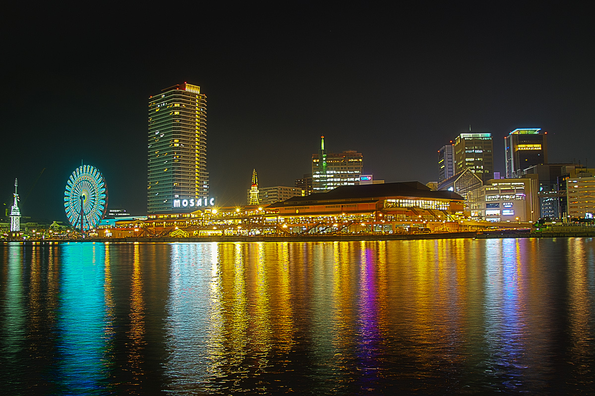

RECOMEND SPOT


メニューの［LOGIN］をクリックします。
［login with Ｇoogle］ボタンをクリックします。
ポップアップウインドウが開くので［login with google］ボタンをクリックします。
［パスワード］を入力して［ログイン］ボタンをクリックします。
＊Googleアカウントがない場合は作成してください。
メニューの［USERS］をクリックします。
USERSページのサブメニューの［ユーザー］をクリックします。
［フォトグラファー名］と［自己紹介］を入力します。
［フォトグラファー登録］ボタンをクリックします。
USERSページのサブメニューの［新規追加］をクリックします。
各入力項目を入力します。
［写真追加］ボタンをクリックします。
USERSページのサブメニューの［画像一覧］をクリックします。
各入力項目を入力します。
［修正］［削除］ボタンをクリックしてください。